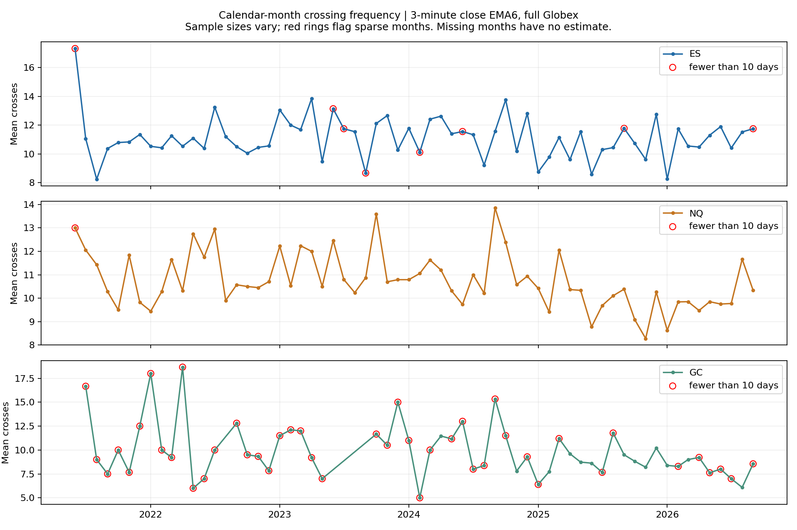
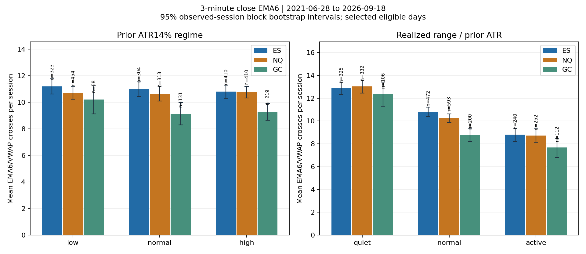

For the 6-period EMA of closing prices on 3-minute bars across the common calendar (2021-06-28–2026-09-18), mean full-Globex crossings per session were ES 10.98 (n=1037), NQ 10.72 (n=1177), GC 9.39 (n=418). Corresponding medians were ES 10, NQ 10, GC 9.
Prior available ATR14% supplies the advance volatility classification. Low/high ATR-bin mean crossings were ES 11.20/10.80, NQ 10.71/10.78, GC 10.21/9.29. The saved tables include support and descriptive intervals; these comparisons do not establish predictive usefulness.
For the separate realized session range / prior ATR classification, quiet/active day mean crossings were ES 12.86/8.80, NQ 13.03/8.73, GC 12.35/7.67. Quiet means range <0.75 ATR; active means range ≥1.25 ATR. This classification is known after the session.
There were 357 shared eligible dates in the matched cohort. Within this cohort, quiet/active mean crossings were ES 13.08/8.31, NQ 12.63/8.42, GC 12.58/7.21. Matching reduces calendar-composition differences while retaining retrospective eligibility selection.
During the common 09:30–16:00 New York window, 3-minute mean crossings were ES 2.92, NQ 2.79, GC 1.64. GC-day results use 3-minute bar opens in [08:20,13:30), beginning at 08:21; the full methodological boundary convention is retained below.
Annual and monthly results are descriptive breakdowns. Common-calendar support was ES 1037 sessions, NQ 1177 sessions, GC 418 sessions. All saved summary rows retain support and small-cell flags. Unequal, selected coverage and partial endpoint years limit generalization and seasonality interpretations.
The 3-minute bars and HLC3/volume Globex VWAP were derived for this study from the pinned one-minute source with the original published eligibility audit. This run does not claim a published 3-minute feature release. Crossing counts describe relations between two moving lines and do not establish a causal explanation, trade entry rule or profitability.
Descriptive study, protocol 1.1.0. Main comparison: 2021-06-28 through 2026-09-18, a 6-period EMA of closing prices on 3-minute bars. Each count is a completed-bar EMA6 crossing of the moving, 18:00 New York anchored VWAP. A touch alone is not a crossing; departure from equality is. Zero-cross sessions remain in the denominator.


| product | sessions | mean_crosses | median_crosses | p25_crosses | p75_crosses | p90_crosses | mean_ci95_low | mean_ci95_high |
| ES | 1037 | 10.98 | 10.00 | 7.00 | 14.00 | 18.00 | 10.67 | 11.30 |
| GC | 418 | 9.39 | 9.00 | 6.00 | 12.00 | 16.00 | 8.89 | 9.87 |
| NQ | 1177 | 10.72 | 10.00 | 7.00 | 14.00 | 18.00 | 10.43 | 11.00 |
Mean intervals are 95% circular moving-block bootstrap intervals (2,000 resamples; blocks of 5 observed sessions). Medians and percentiles describe the distribution of daily counts. Counts are sensitive to timeframe and equality convention.
ATR14% is the last completed daily value available at the Globex open, ranked against its preceding 252 daily observations separately for each product. Low/normal/high use fixed thirds. The rank uses complete daily history, not just the selected VWAP sample.
| product | regime | sessions | mean_crosses | median_crosses | mean_ci95_low | mean_ci95_high |
| ES | high | 410 | 10.80 | 10.00 | 10.31 | 11.30 |
| ES | low | 323 | 11.20 | 11.00 | 10.63 | 11.79 |
| ES | normal | 304 | 10.99 | 11.00 | 10.44 | 11.54 |
| GC | high | 219 | 9.29 | 9.00 | 8.65 | 9.91 |
| GC | low | 68 | 10.21 | 10.00 | 9.13 | 11.24 |
| GC | normal | 131 | 9.11 | 9.00 | 8.30 | 9.98 |
| NQ | high | 410 | 10.78 | 11.00 | 10.33 | 11.21 |
| NQ | low | 454 | 10.71 | 10.00 | 10.24 | 11.17 |
| NQ | normal | 313 | 10.65 | 10.00 | 10.10 | 11.23 |
Quiet <0.75 ATR; normal 0.75–<1.25 ATR; active ≥1.25 ATR. This full-session high-low classification is only known after the day; it is different from the background ATR regime.
| product | regime | sessions | mean_crosses | median_crosses | mean_ci95_low | mean_ci95_high |
| ES | active | 240 | 8.80 | 8.00 | 8.23 | 9.38 |
| ES | normal | 472 | 10.80 | 10.00 | 10.38 | 11.22 |
| ES | quiet | 325 | 12.86 | 12.00 | 12.30 | 13.40 |
| GC | active | 112 | 7.67 | 8.00 | 6.81 | 8.50 |
| GC | normal | 200 | 8.78 | 8.00 | 8.20 | 9.36 |
| GC | quiet | 106 | 12.35 | 12.00 | 11.28 | 13.41 |
| NQ | active | 252 | 8.73 | 8.00 | 8.13 | 9.37 |
| NQ | normal | 593 | 10.27 | 10.00 | 9.87 | 10.64 |
| NQ | quiet | 332 | 13.03 | 13.00 | 12.46 | 13.59 |
| product | year | sessions | mean_crosses | median_crosses | p90_crosses | small_cell |
| ES | 2021 | 101 | 10.63 | 10.00 | 17.00 | False |
| ES | 2022 | 239 | 10.86 | 10.00 | 17.00 | False |
| ES | 2023 | 155 | 11.83 | 11.00 | 18.60 | False |
| ES | 2024 | 159 | 11.55 | 11.00 | 19.20 | False |
| ES | 2025 | 216 | 10.38 | 10.00 | 17.50 | False |
| ES | 2026 | 167 | 10.80 | 11.00 | 17.00 | False |
| GC | 2021 | 15 | 10.60 | 10.00 | 15.80 | True |
| GC | 2022 | 55 | 10.11 | 10.00 | 17.60 | False |
| GC | 2023 | 35 | 11.40 | 11.00 | 17.60 | False |
| GC | 2024 | 62 | 9.94 | 10.00 | 15.90 | False |
| GC | 2025 | 165 | 9.05 | 9.00 | 14.00 | False |
| GC | 2026 | 86 | 8.14 | 8.00 | 14.00 | False |
| NQ | 2021 | 115 | 10.88 | 10.00 | 17.60 | False |
| NQ | 2022 | 236 | 10.96 | 11.00 | 17.00 | False |
| NQ | 2023 | 217 | 11.43 | 11.00 | 19.00 | False |
| NQ | 2024 | 213 | 11.13 | 11.00 | 18.00 | False |
| NQ | 2025 | 224 | 9.92 | 9.00 | 17.00 | False |
| NQ | 2026 | 172 | 9.91 | 10.00 | 16.90 | False |
2021 and 2026 are partial calendar years. GC coverage is especially sparse and selected. Yearly differences combine changing conditions with changing sample composition.
The common US window uses bar opens from 09:30 inclusive to 16:00 exclusive New York, exactly aligned to the 3-minute grid. For GC this is not its exchange-specific regular session.
| product | sessions | mean_crosses | median_crosses | p25_crosses | p75_crosses | p90_crosses | mean_ci95_low | mean_ci95_high |
| ES | 1037 | 2.92 | 2.00 | 1.00 | 4.00 | 6.40 | 2.77 | 3.06 |
| GC | 418 | 1.64 | 1.00 | 0.00 | 3.00 | 5.00 | 1.45 | 1.84 |
| NQ | 1177 | 2.79 | 2.00 | 1.00 | 4.00 | 6.00 | 2.65 | 2.93 |
GC-day membership uses bar opens in [08:20,13:30). On the fixed 3-minute grid, the first included bar opens at 08:21 and the last at 13:27, for 309 minutes of bar exposure. The 08:18 bar is excluded even though it overlaps the window boundary.
| product | sessions | mean_crosses | median_crosses | p25_crosses | p75_crosses | p90_crosses | mean_ci95_low | mean_ci95_high |
| GC | 418 | 1.75 | 1.00 | 0.00 | 3.00 | 5.00 | 1.56 | 1.96 |
The following compares only eligible dates shared by ES, NQ and GC within the common calendar, reducing calendar-composition differences. Selection remains retrospective.
| product | sessions | mean_crosses | median_crosses | p25_crosses | p75_crosses | p90_crosses | mean_ci95_low | mean_ci95_high |
| ES | 357 | 10.79 | 10.00 | 7.00 | 14.00 | 18.00 | 10.20 | 11.36 |
| GC | 357 | 9.39 | 9.00 | 6.00 | 12.00 | 16.00 | 8.87 | 9.92 |
| NQ | 357 | 9.94 | 10.00 | 6.00 | 13.00 | 17.00 | 9.43 | 10.46 |
Calendar-month statistics, month-of-year statistics, annual statistics, count distributions, daily observations, crossing events, and coverage are saved alongside this report. Every table includes denominators. Cells with fewer than 30 sessions are flagged; unobserved months are absent evidence, never zero-cross months.
Reproduction: use the frozen source, settings, input lock, environment lock and exact commands in the run manifest. Rendering reads saved tables; verification and integrity have separate receipts.